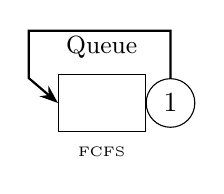

Tutorial 5: Re-entrant Line Modeling
This example models re-entrant lines where jobs re-enter a station multiple times, asking for different classes of service at each visit. The completes flag controls whether a class transition counts as a job completion.

model = Network('RL');
queue = Queue(model, 'Queue', SchedStrategy.FCFS);
K = 3; N = [1,0,0];
for k=1:K
jobclass{k} = ClosedClass(model, ['Class',int2str(k)], N(k), queue);
queue.setService(jobclass{k}, Erlang.fitMeanAndOrder(k,2));
end
P = model.initRoutingMatrix();
P{jobclass{1},jobclass{2}}(queue,queue) = 1.0;
P{jobclass{2},jobclass{3}}(queue,queue) = 1.0;
P{jobclass{3},jobclass{1}}(queue,queue) = 1.0;
model.link(P);
ncAvgTable = NC(model).avgTable()
ncAvgSysTable = NC(model).avgSysTable()
jobclass{1}.completes = false;
jobclass{2}.completes = false;
ncAvgSysTable2 = NC(model).avgSysTable()// Example 5: Re-entrant line modeling
val model = Network("RL")
val queue = Queue(model, "Queue", SchedStrategy.FCFS)
val K = 3
val N = intArrayOf(1, 0, 0)
val jobclass = mutableListOf<ClosedClass>()
for (k in 0 until K) {
val jc = ClosedClass(model, "Class${k+1}", N[k], queue)
queue.setService(jc, Erlang.fitMeanAndOrder((k+1).toDouble(), 2))
jobclass.add(jc)
}
val P = model.initRoutingMatrix()
P.set(jobclass[0], jobclass[1], queue, queue, 1.0)
P.set(jobclass[1], jobclass[2], queue, queue, 1.0)
P.set(jobclass[2], jobclass[0], queue, queue, 1.0)
model.link(P)
NC(model).avgTable.print()
NC(model).avgSysTable.print()
jobclass[0].setCompletes(false)
jobclass[1].setCompletes(false)
NC(model).avgSysTable.print()from line_solver import *
model = Network('RL')
queue = Queue(model, 'Queue', SchedStrategy.FCFS)
K = 3
N = (1, 0, 0)
jobclass = []
for k in range(K):
jobclass.append(ClosedClass(model, 'Class' + str(k+1), N[k], queue))
queue.set_service(jobclass[k], Erlang.fit_mean_and_order(1+k, 2))
P = model.init_routing_matrix()
P.set(jobclass[0], jobclass[1], queue, queue, 1.0)
P.set(jobclass[1], jobclass[2], queue, queue, 1.0)
P.set(jobclass[2], jobclass[0], queue, queue, 1.0)
model.link(P)
ncAvgTable = NC(model).avg_table()
ncAvgSysTable = NC(model).avg_sys_table()
jobclass[0].completes = False
jobclass[1].completes = False
ncAvgSysTable2 = NC(model).avg_sys_table()Expected Output (Per-class metrics)
ncAvgTable =
Station JobClass QLen Util RespT ResidT ArvR Tput
_______ ________ _______ _______ _____ _______ _______ _______
Queue Class1 0.16667 0.16667 1 0.33333 0.16667 0.16667
Queue Class2 0.33333 0.33333 2 0.66667 0.16667 0.16667
Queue Class3 0.5 0.5 3 1 0.16667 0.16667
Expected Output (System metrics, completes=true)
ncAvgSysTable =
Chain JobClasses SysRespT SysTput
______ ______________________________ ________ _______
Chain1 {[Class1 Class2 Class3]} 2 0.5
Expected Output (System metrics, completes=false for Class1,2)
ncAvgSysTable2 =
Chain JobClasses SysRespT SysTput
______ ______________________________ ________ _______
Chain1 {[Class1 Class2 Class3]} 6 0.16667